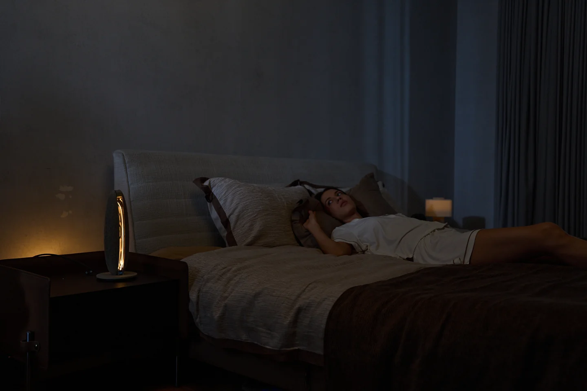
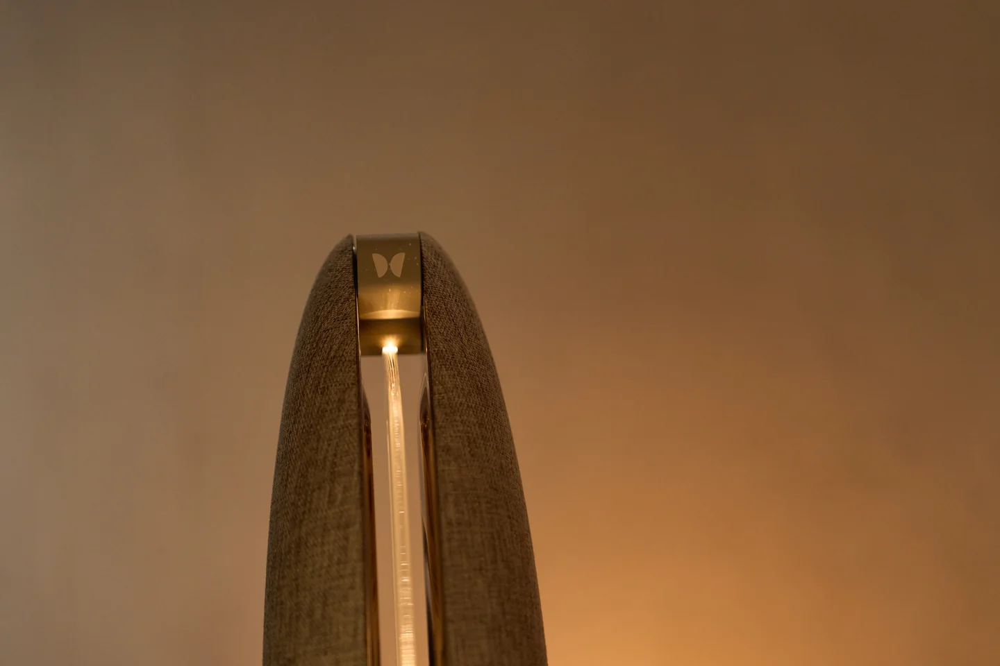
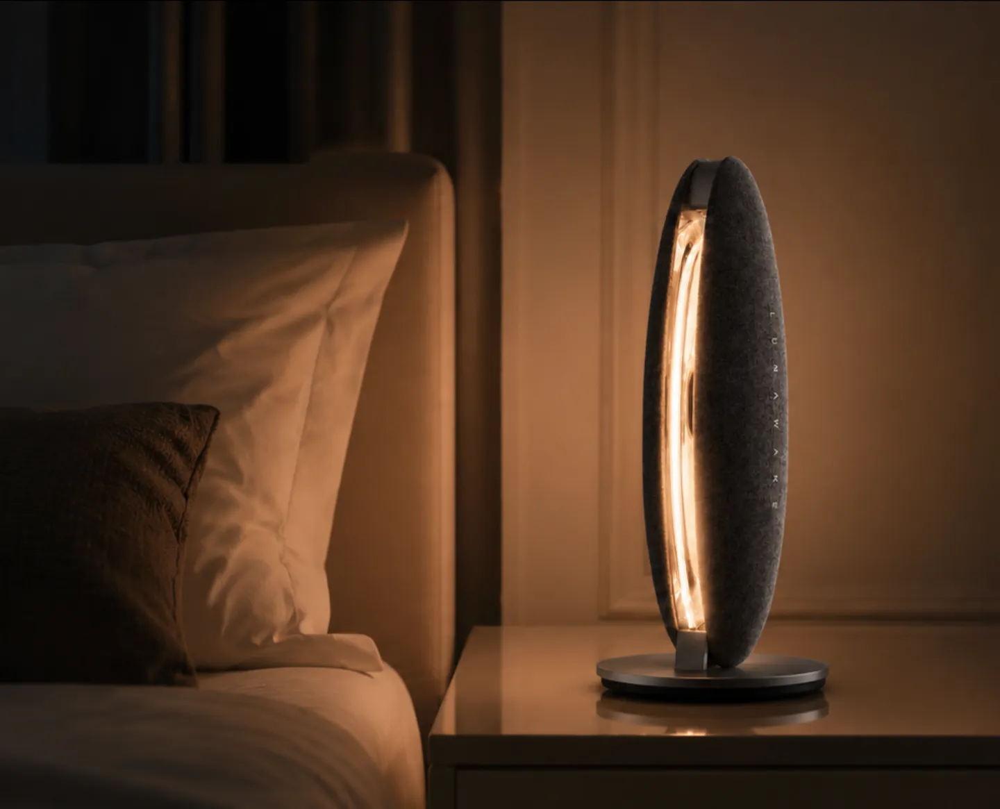
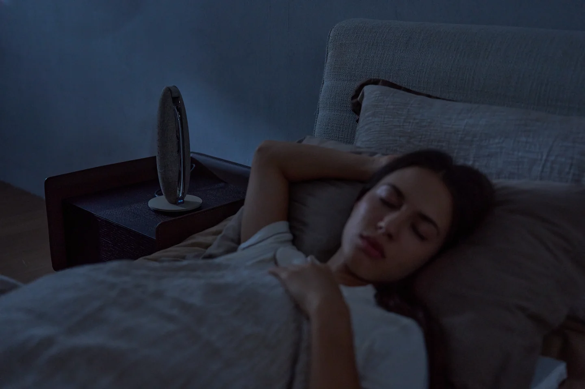
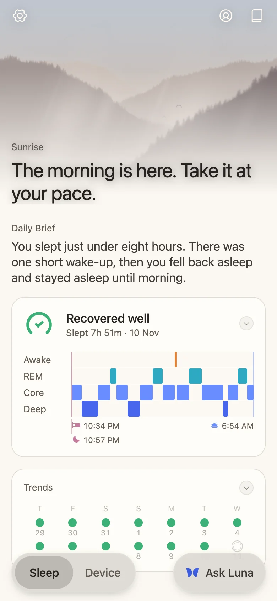
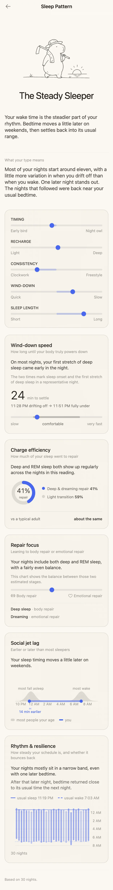
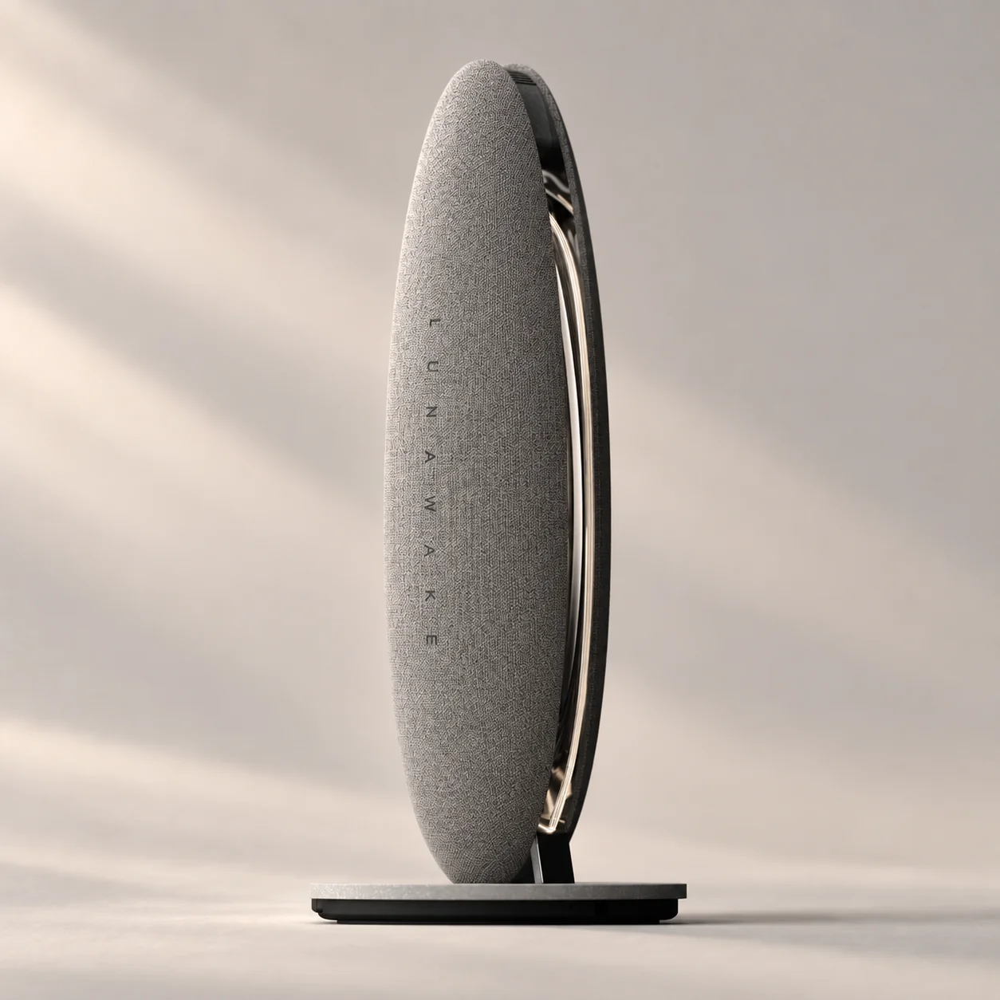

LunaWake / your sleep, in rhythm
Sleep shouldn’t
feel like work.
LunaWake is a bedside device with an AI sleep coach. It looks after your wind-down and your wake-up, then tells you in a few sentences what last night meant. Nothing to wear, nothing to charge.
Sound familiar
Everything you’ve tried gives you one more thing to do.
- A watch to charge and wear to bed.
- A sleep score to decode on your own.
- A sound timer to set every night.
LunaWake takes these off your plate. Nothing to wear. Soundscapes designed to fade out after you fall asleep. A few sentences each morning on what last night meant.
One bedside object in place of a sleep tracker, a sound machine, and a sunrise alarm. No subscription for the essentials.
Why rhythm / where it starts
Sleep is what the rest of your day stands on.
When sleep goes well, training, eating, and mood all get easier to keep steady. People who sleep well aren’t more disciplined. Their rhythm is in step with their life.
LunaWake does two things. It takes care of the bedroom for you, and it reads your nights and tells you what’s next.
Luna’s coaching draws on CBT-I, an established behavioral approach to sleep. LunaWake is a wellness product, not a medical device, and does not diagnose or treat any condition.The Bedroom Autopilot / one night
The whole wind-down — handled.
This is the part you used to do by hand. LunaWake looks after the bedroom from evening to morning. Most of it is on by default, and anything you don’t want can be turned off in the app. Sleep is different for everyone.



Rhythm check
A biological clock that talks back.
Hold LunaWake for two seconds. It tells you roughly where your body is in its rhythm right now, like the afternoon dip, a second wind, or your sleep window, with one thing you can do about it. In the app, you see your whole day’s rhythm at a glance. The suggestion itself is only spoken on the device.
Get early access and launch pricingExample day · 7 AM to 7 AM
Sleep rhythm
Pick a stage to see what it means. Your own times depend on your sleep rhythm.
DipNow · 1 PM – 3 PM
A natural dip in alertness partway through your day.
Luna App · demo settings
What you can manage
Can’t sleep
A bedside cue to get up when sleep won’t come.
The device
A quiet object for the room you already have.
Warm light, gentle sound, contact-free sensing, and a physical privacy switch — designed to belong at the bedside and disappear into the night.
Explore finishes
Contact-free
No ring. No watch. No skin contact.
Privacy switch
Flip it and the radar and microphones stop sensing. The app can’t turn them back on. Only you can.
Keeps going offline
After a one-time Wi-Fi setup, alarms, light, sound, and overnight recording keep running on the device if the network drops.
Light + sound
Wind down gently. Wake to light and sound that build.

The object in the room
Present when you need it. Quiet when you don’t.
The form keeps the light, sensing, and privacy controls in one calm bedside object — close enough to help, considered enough to disappear.
Bedside sensing / privacy by design
Smart where it helps. Quiet where it matters.
LunaWake keeps sensing close to the bedside. See what it notices and how the physical privacy switch works.
Luna Pilot
74 cm · Best 50–100 cm
Know what is being noticed.
See radar status and room readings while sensors are on. When available, your morning report shows when snoring was detected.
- Snoring
- 36m
- 7.5% of recorded sleep
Snoring per 30 min
Readings and report data are illustrative.
Product mechanism · one quiet loop
How LunaWake follows the night.
While you sleep, LunaWake turns radar signals into sleep data on the device. After the night ends, that night’s record is encrypted and uploaded to build your report. In the morning, light and sound build at the time you set.
01 · SenseNotices the night without a wearable. Before bed · in bedLocal sampleLocal sensingcontact-free · on the deviceBreathing is sampled at the bedside without a wearable. The radar picks up motion, not images.
02 · FollowThe night’s record builds your report. BedtimeAsleep · cues fadeNightly uploadencrypted · after the night endsThe device turns radar signals into sleep data locally. After each night, the record is encrypted and uploaded to create your sleep stages, summary, and trends.
03 · WakeRight at the time you set. 10 min beforeAlarm timeSmart Wakesoft glow first · alarm on timeWith Smart Wake on, a soft glow comes on ten minutes before your alarm. The alarm itself starts at the time you set, with light and sound that build.
Radar signals are processed on the device. They are motion, not images, and can’t be turned into a picture of you.
It is used to create your sleep stages, morning summary, and trends. Live readings are passed to the app for display and are not stored.
Smart Wake adds a soft glow ten minutes before. It never moves the alarm.
Data boundary Radar signals are processed on the device. Each night’s sleep record is encrypted and uploaded to build your report. When a snore-like sound occurs, a clip of a few seconds is uploaded for snore detection. No other audio is recorded.
Illustrative product flow, not a clinical waveform.
See our approachAI Sleep Coach / the Luna App
Not another chatbot. A coach that reads your nights and follows up.
Already track your sleep? Luna starts where the score stops. You wake up to a short summary of last night. Ask Luna anything and the answer comes from your own record, your habits, and your real life. When Luna doesn’t know, Luna says so.
Keep your watch
Luna uses what you already track. Luna can read the sleep data your watch syncs to Apple Health. The Luna App also works on its own, without the device.
Last night, in a few sentences.
What happened, and what’s worth noticing. Your sleep score, stages, and trends are there when you want them.
Meaning first. Numbers when you want them.

Your nights begin to have a shape.
Sleep Pattern turns your nights into a picture you can recognize, and it updates as your record grows. Luna remembers the habits you share, so you don’t start from zero each time.
A rhythm you can learn to notice.See your night differently.
Join the launch listA different kind of sleep read
Wake up to what last night meant — not a score.
Most sleep devices hand you a score and leave. It’s easy to end up chasing the number instead of the rest.
Luna starts with a few sentences: what happened, and what it might mean. Your sleep score, stages, and trends are one tap away when you want the detail.
Meaning first. Nothing to fail.Choose your finish
A quieter kind of color.
Three material directions, one LunaWake experience. Select a finish to see the product render in its material state.
Moonstone (Grey)Light grey woven fabric, standing on its base in soft daylight.

Sleep Lab
What we've found so far — and what we're still testing.
We test LunaWake in real rooms, and we are comparing it against PSG in a university sleep lab. That work is in progress. Here is what we know today, and where we are still learning.
What we're still refining: how much of that is worth showing you at all.
We’re still tuning how light and sound build, so the wake stays gentle and on time.
We're still learning where useful ends and overclaiming begins.
Luna’s coaching draws on CBT-I methods. LunaWake is a consumer wellness product, not a medical device.
Questions, answered
Start with the important ones.
Clarity matters. Here is what LunaWake is designed to do — and where we are still learning.
Do I need to wear anything?
No. LunaWake is a bedside system, with no ring, watch, or sensor on your body.
Does LunaWake use a camera?
No. LunaWake has no camera. Its radar senses the small motion of breathing, not images. The microphones measure how loud the room is, and when a snore-like sound occurs, a clip of a few seconds is captured for snore detection. There is no speech recognition and no voice assistant. Flip the physical privacy switch and the radar and microphones stop sensing.
What does it measure?
Whether you are in bed and how you breathe, plus room temperature, humidity, and light. The device turns these into sleep data locally. After each night, the record is encrypted and uploaded to create your sleep stages, morning summary, and trends. It is not a medical diagnostic system.
Does LunaWake work offline?
For the essentials, yes, after a one-time Wi-Fi setup. Alarms, light, sound, and overnight recording keep running on the device, and records upload once you are back online. Sleep reports, Luna, and updates need a connection. LunaWake has no battery, so after a power cut it needs to reconnect to recover the time and your alarm. For an important morning, set a backup alarm.
Is it a medical device?
No. LunaWake is a consumer wellness product. It does not diagnose, treat, or prevent any condition. A comparison against PSG in a university sleep lab is in progress.
Why does LunaWake cost what it costs?
It’s a sound machine, a sunrise alarm, and a wearable-free sleep tracker in one bedside object, with an AI sleep coach on top. It is a one-time purchase, and device features and your sleep data don’t need a subscription.
Is there a subscription?
No. There are no monthly or annual fees. Device features and your sleep data stay free, and what Luna brings you each day is free. In-depth answers from Ask Luna use credits. Every LunaWake comes with 10,000 credits, and they never expire. If you run out, Luna still answers.
Is my data mine?
Yes. Your sleep data belongs to you. We don’t sell it, use it for advertising, or use it to train AI models. You can ask for an export or deletion at any time by emailing support@lunawake.ai. In-app export and deletion are in development.
Can I use the Luna App without the device?
Yes. The app can work from the sleep data in Apple Health. Device features, bedroom readings, and Rhythm check need LunaWake.
When can I get one?
Join the launch list for product updates, testing opportunities, and availability news.